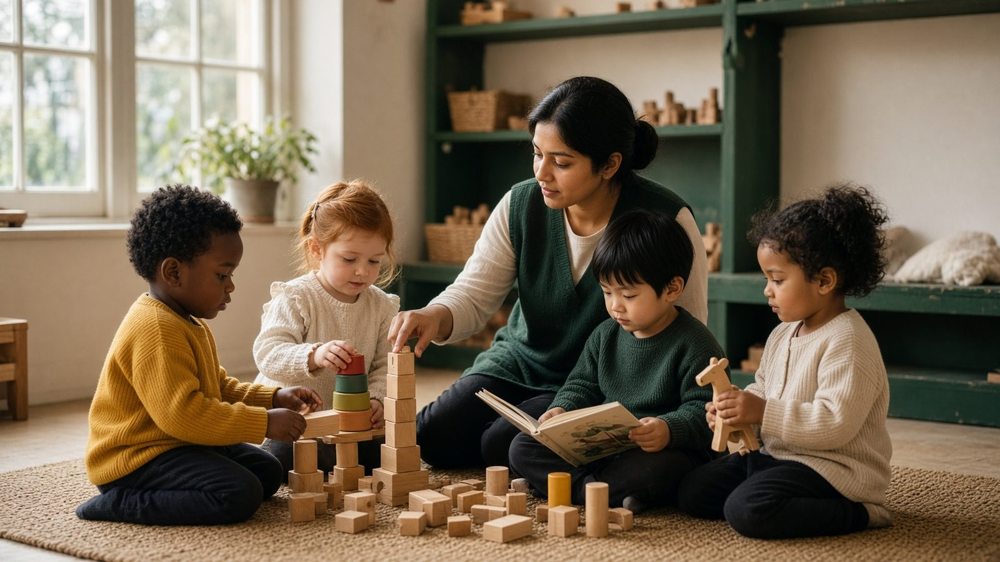
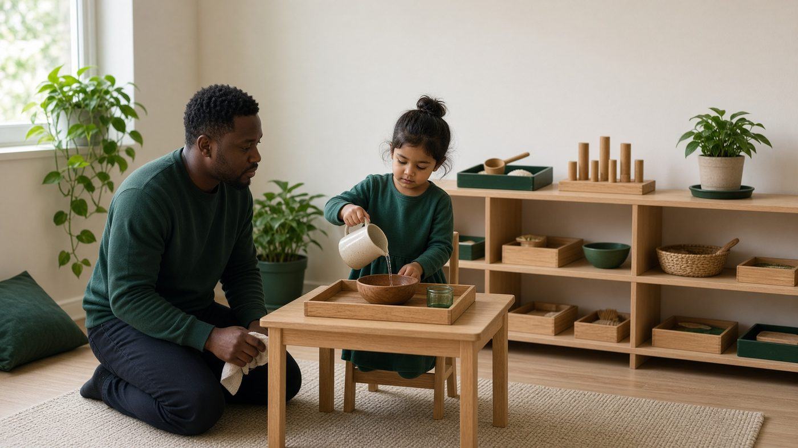
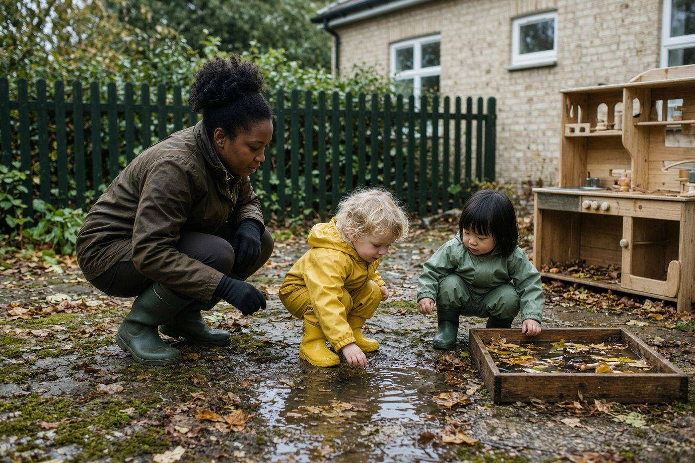
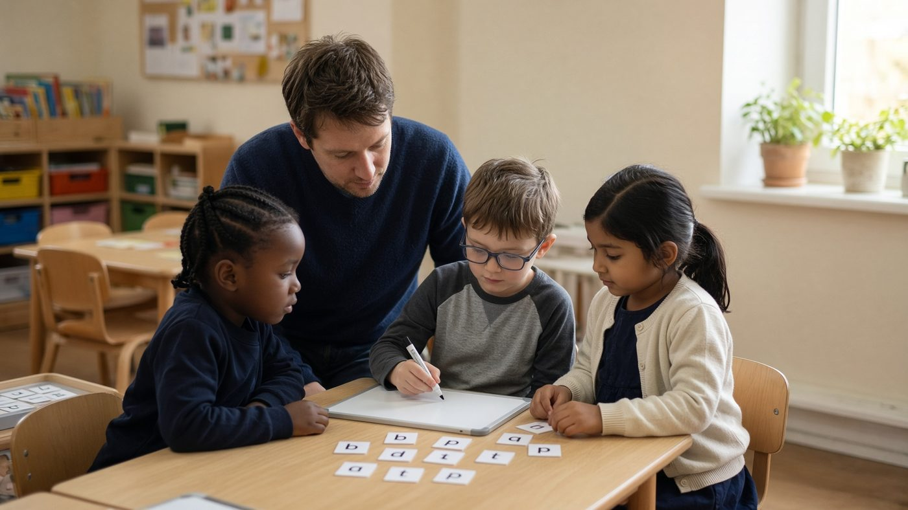

Good afternoon · T Level
Education and Early Years Revision
Notes, quizzes, placement scenarios and exam-style papers mapped to every core criterion in the NCFE CACHE Generation 2 specification — seven elements, one core exam, ESP and the Early Years Educator specialism.
NCFE CACHE · Generation 2 · spec v2.0 · 30 April 2026
Spec v2.0 · April 2026
This app now follows the April 2026 specification, not the old 12-element Generation 1 Hodder book. Cite Working Together 2026 and KCSIE 2026. Family Help replaces the split between early help and s.17. Bruner is modes of representation.
Revised
0/61
Tested
0/61
Exam ready
0/61

Explore
Early years pedagogy
Theories, named approaches, and spot-the-pedagogy rooms.
Daily ten
Ten mixed ABC questions. Instant mark after each one.

Placement scenarios
Real-room situations with model answers and mark schemes.

Exam papers
One core exam (2 h 30), ESP tasks, OS scenarios and 15-mark responses.
Revision planner
Tick Revised, Tested and Exam ready against every spec criterion.
Core knowledge
View allElement 1 · ESP
Wider education sector
Types of provision and the general, specialist and supporting roles in the sector.
Primarily the ESP — may also appear in the core exam
Element 2 · Core exam
Supporting education
Regulators, debates, EYFS and National Curriculum, pedagogy, technology, metacognition and EAL.
Core exam · Section A (with Element 6)
Element 3 · Core exam
Safeguarding, equality and diversity and wellbeing
Legislation, policies, risk, abuse, grooming, equality, labelling and barriers to participation.
Core exam · Section B
Element 4 · Core exam
Special educational needs and disabilities (SEND)
SEND policy and EHCPs, multi-agency working, inclusion, models of disability, cognition and AAC.
Core exam · Section C
Element 5 · Core exam
Child development
Typical development 0–19, attachment, language, behaviour, self-concept, self-regulation and risk.
Core exam · Section D
Element 6 · Core exam
Working in partnership
Families, family dynamics, barriers, agencies and collaborative professional working.
Core exam · Section A (with Element 2)
Element 7 · ESP
Professional practice
National assessments, diagnostic/formative/summative assessment, observation, reflection and CPD.
Primarily the ESP — may also appear in the core exam
Early Years Educator
Occupational specialism performance outcomes from the NCFE CACHE specification.
PO1
Helping children play, develop and learn in the early years
PO2
Building relationships with children that help them develop
PO3
Planning, running and reviewing care, play and learning so children make progress
PO4
Keeping children safe, healthy and well
PO5
Working with colleagues, families and other professionals to support children's development
Original revision notes aligned to the NCFE CACHE specification (QN 610/5748/4). Practice papers are exam-style, not official NCFE scripts. Independent resource, not endorsed by NCFE, CACHE or the DfE.